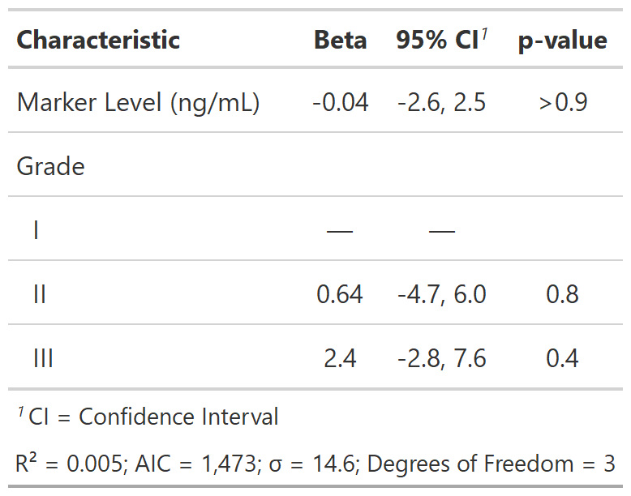

![[Experimental]](../help/figures/lifecycle-experimental.svg) Add the statistics returned in
Add the statistics returned in broom::glance() as a table source note.
| add_glance_source_note {gtsummary} | R Documentation |
Add the statistics returned in broom::glance() as a table source note.
add_glance_source_note( x, include = everything(), label = NULL, fmt_fun = NULL, glance_fun = broom::glance, sep1 = " = ", sep2 = "; ", ... )
x |
'tbl_regression' object |
include |
tidyselect list of statistics to include. Default is |
label |
use to update statistic labels |
fmt_fun |
use to update default formatting function. Default is
|
glance_fun |
function to calculate and return glance statistics.
Default is |
sep1 |
Separator between statistic name and statistic.
Default is |
sep2 |
Separator between statistics. Default is |
... |
additional arguments passed to |
The following statistics have set default labels when being printed.
When there is no default, the label is the column name from broom::glance().
| Statistic Name | Default Label |
| r.squared | R² |
| adj.r.squared | Adjusted R² |
| p.value | p-value |
| logLik | log-likelihood |
| statistic | Statistic |
| df.residual | Residual df |
| null.deviance | Null deviance |
| df.null | Null df |
| nevent | N events |
| concordance | c-index |
| std.error.concordance | c-index SE |
Example 1

# Example 1 ----------------------------------
add_glance_source_note_ex1 <-
lm(age ~ marker + grade, trial) %>%
tbl_regression() %>%
add_glance_source_note(
label = list(df ~ "Degrees of Freedom", sigma ~ "\U03C3"),
fmt_fun = df ~ style_number,
include = c(r.squared, AIC, sigma, df)
)